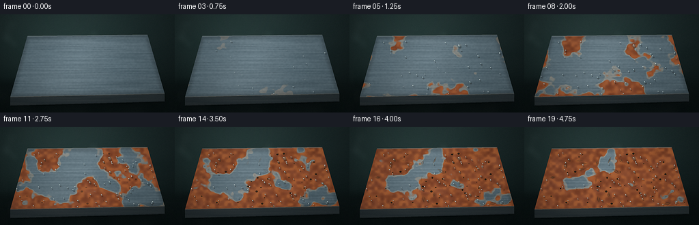
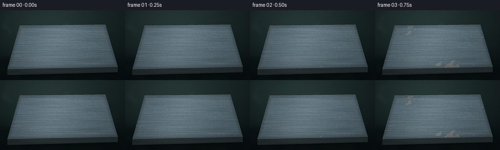

CODING AGENTS AS PIXEL WORLD MODELS
traex/DeepSeek-V4.1-Flash · phygen_157
点击播放 · 原生 RGB 像素
逐轮保存的候选
回放视频、检查图与代码变化。
每份候选均可单独播放。实际图片检查记录在下方工具轨迹中。
候选 01播放与检查图
点击播放 · 原生 RGB 像素


展开代码变化
--- 上一保存版本
+++ 本次保存版本
@@ -0,0 +1,398 @@
+from pathlib import Path
+
+import numpy as np
+from PIL import Image, ImageDraw, ImageFilter
+
+import artifact_io
+
+
+ROOT = Path(__file__).resolve().parent
+W, H, N, FPS = 256, 144, 20, 4.0
+SS = 4
+RW, RH = W * SS, H * SS
+RNG = np.random.default_rng(157)
+
+TOP = [(40, 32), (216, 30), (241, 116), (15, 121)]
+SIDE = [(15, 121), (241, 116), (241, 128), (15, 134)]
+
+
+def smoothstep(a, b, x):
+ t = np.clip((x - a) / max(b - a, 1e-6), 0.0, 1.0)
+ return t * t * (3.0 - 2.0 * t)
+
+
+def noise_field(cell_x, cell_y, seed, blur=0):
+ rng = np.random.default_rng(seed)
+ lw = max(2, int(RW / (cell_x * SS)))
+ lh = max(2, int(RH / (cell_y * SS)))
+ low = rng.random((lh, lw), dtype=np.float32)
+ image = Image.fromarray(np.uint8(np.clip(low * 255, 0, 255)))
+ image = image.resize((RW, RH), Image.Resampling.BICUBIC)
+ if blur:
+ image = image.filter(ImageFilter.GaussianBlur(blur * SS))
+ field = np.asarray(image, dtype=np.float32) / 255.0
+ lo, hi = np.percentile(field, [1, 99])
+ return np.clip((field - lo) / (hi - lo + 1e-6), 0.0, 1.0)
+
+
+def scaled_points(points):
+ return [(int(x * SS), int(y * SS)) for x, y in points]
+
+
+def polygon_mask(points):
+ image = Image.new("L", (RW, RH), 0)
+ ImageDraw.Draw(image).polygon(scaled_points(points), fill=255)
+ return np.asarray(image, dtype=np.float32) / 255.0
+
+
+def inside_polygon(x, y, points):
+ inside = False
+ j = len(points) - 1
+ for i, (xi, yi) in enumerate(points):
+ xj, yj = points[j]
+ if (yi > y) != (yj > y) and x < (xj - xi) * (y - yi) / (yj - yi + 1e-9) + xi:
+ inside = not inside
+ j = i
+ return inside
+
+
+def segment_distance(x, y, a, b):
+ ax, ay = a
+ bx, by = b
+ vx, vy = bx - ax, by - ay
+ t = np.clip(((x - ax) * vx + (y - ay) * vy) / (vx * vx + vy * vy), 0.0, 1.0)
+ return np.sqrt((x - (ax + t * vx)) ** 2 + (y - (ay + t * vy)) ** 2)
+
+
+def top_mask():
+ return polygon_mask(TOP)
+
+
+YY, XX = np.mgrid[0:RH, 0:RW].astype(np.float32)
+X = XX / (RW - 1)
+Y = YY / (RH - 1)
+TM = top_mask()
+
+edge_distance = np.full((RH, RW), 1e6, dtype=np.float32)
+for p0, p1 in zip(TOP, TOP[1:] + TOP[:1]):
+ edge_distance = np.minimum(edge_distance, segment_distance(XX / SS, YY / SS, p0, p1))
+
+
+def make_droplets():
+ drops = []
+ attempts = 0
+ while len(drops) < 82 and attempts < 5000:
+ attempts += 1
+ x = RNG.uniform(24, 232)
+ y = RNG.uniform(38, 117)
+ if not inside_polygon(x, y, TOP):
+ continue
+ size = float(np.clip(RNG.lognormal(-0.52, 0.45), 0.65, 4.1))
+ drops.append(
+ {
+ "x": x,
+ "y": y,
+ "size": size,
+ "stretch": RNG.uniform(0.82, 1.32),
+ "activation": RNG.uniform(0.015, 0.43),
+ "delay": RNG.uniform(0.10, 0.24),
+ "tone": RNG.uniform(-1.0, 1.0),
+ }
+ )
+ return drops
+
+
+DROPS = make_droplets()
+
+N_COARSE = noise_field(28, 22, 11)
+N_MID = noise_field(11, 9, 12)
+N_FINE = noise_field(4.5, 4.0, 13)
+N_GRAIN = noise_field(1.1, 1.1, 14)
+N_BRUSH = noise_field(42, 1.4, 15, blur=0.15)
+N_METAL = noise_field(2.1, 1.8, 16)
+N_FOG = noise_field(20, 15, 17, blur=1.2)
+
+
+def build_droplet_field():
+ image = Image.new("L", (RW, RH), 0)
+ draw = ImageDraw.Draw(image)
+ for drop in DROPS:
+ x, y = drop["x"] * SS, drop["y"] * SS
+ radius = drop["size"] * SS * 3.0
+ draw.ellipse((x - radius, y - radius, x + radius, y + radius), fill=180)
+ image = image.filter(ImageFilter.GaussianBlur(13 * SS))
+ field = np.asarray(image, dtype=np.float32) / 255.0
+ lo, hi = np.percentile(field[TM > 0], [5, 98])
+ return np.clip((field - lo) / (hi - lo + 1e-6), 0.0, 1.0)
+
+
+DROP_FIELD = build_droplet_field()
+EDGE_FIELD = np.exp(-edge_distance / 11.0)
+RUST_FIELD = 0.55 * N_COARSE + 0.25 * N_MID + 0.10 * N_FINE + 0.32 * EDGE_FIELD + 0.34 * DROP_FIELD
+valid = TM > 0.5
+lo, hi = np.percentile(RUST_FIELD[valid], [2, 98])
+RUST_FIELD = np.clip((RUST_FIELD - lo) / (hi - lo + 1e-6), 0.0, 1.0)
+
+
+def build_background():
+ top = np.array([28, 39, 39], dtype=np.float32)
+ bottom = np.array([8, 14, 14], dtype=np.float32)
+ bg = top[None, None, :] * (1 - Y[..., None]) + bottom[None, None, :] * Y[..., None]
+
+ glow = np.exp(-(((X - 0.37) / 0.43) ** 2 + ((Y - 0.27) / 0.55) ** 2))
+ bg += glow[..., None] * np.array([16, 23, 21], dtype=np.float32)
+
+ table = smoothstep(0.62, 0.74, Y)
+ table_color = (
+ np.array([20, 29, 28], dtype=np.float32)[None, None, :] * (1 - Y[..., None] * 0.7)
+ + np.array([7, 11, 11], dtype=np.float32)[None, None, :] * (Y[..., None] * 0.7)
+ )
+ bg = bg * (1 - table[..., None]) + table_color * table[..., None]
+
+ shadow = np.exp(-(((X - 0.51) / 0.42) ** 6 + ((Y - 0.86) / 0.10) ** 2))
+ bg *= 1.0 - 0.44 * shadow[..., None]
+
+ bokeh = Image.new("RGBA", (RW, RH), (0, 0, 0, 0))
+ draw = ImageDraw.Draw(bokeh)
+ for _ in range(34):
+ x = RNG.uniform(0.03, 0.97) * RW
+ y = RNG.uniform(0.04, 0.58) * RH
+ r = RNG.uniform(2.0, 8.0) * SS
+ alpha = int(RNG.uniform(8, 22))
+ draw.ellipse((x - r, y - r, x + r, y + r), fill=(165, 196, 190, alpha))
+ bokeh = bokeh.filter(ImageFilter.GaussianBlur(4.5 * SS))
+ bg_image = Image.fromarray(np.uint8(np.clip(bg, 0, 255)), "RGB")
+ bg_image = Image.alpha_composite(bg_image.convert("RGBA"), bokeh).convert("RGB")
+ return np.asarray(bg_image, dtype=np.float32)
+
+
+BACKGROUND = build_background()
+
+
+def build_steel():
+ steel = np.zeros((RH, RW, 3), dtype=np.float32)
+ base = np.array([92, 105, 111], dtype=np.float32)
+ brushed = (N_BRUSH - 0.5) * 15.0
+ fine = (N_METAL - 0.5) * 7.0
+ lighting = 0.91 + 0.11 * (1.0 - Y) + 0.05 * np.exp(-((X - 0.28) ** 2 + (Y - 0.34) ** 2) / 0.18)
+ sheen = 16.0 * np.exp(-(((X + 0.22 * Y - 0.54) / 0.20) ** 2))
+ value = brushed + fine + sheen
+ steel[..., 0] = base[0] * lighting + value
+ steel[..., 1] = base[1] * lighting + value
+ steel[..., 2] = base[2] * lighting + value
+ steel += np.array([-4, 0, 3], dtype=np.float32)[None, None, :]
+
+ edge_falloff = 0.82 + 0.18 * smoothstep(0.0, 8.0, edge_distance)
+ steel *= edge_falloff[..., None]
+
+ scratch = Image.new("RGBA", (RW, RH), (0, 0, 0, 0))
+ draw = ImageDraw.Draw(scratch)
+ for _ in range(28):
+ y = RNG.uniform(0.24, 0.82) * RH
+ x0 = RNG.uniform(-0.05, 0.55) * RW
+ length = RNG.uniform(0.18, 0.55) * RW
+ slope = RNG.uniform(-0.018, 0.018) * RH
+ color = (210, 221, 222, int(RNG.uniform(7, 21)))
+ draw.line((x0, y, x0 + length, y + slope), fill=color, width=max(1, int(RNG.uniform(0.5, 1.2) * SS)))
+ scratch = scratch.filter(ImageFilter.GaussianBlur(0.7 * SS))
+ steel_image = Image.fromarray(np.uint8(np.clip(steel, 0, 255)), "RGB").convert("RGBA")
+ steel = np.asarray(Image.alpha_composite(steel_image, scratch).convert("RGB"), dtype=np.float32)
+ return steel
+
+
+STEEL = build_steel()
+
+
+def build_pits():
+ pits = []
+ attempts = 0
+ while len(pits) < 44 and attempts < 6000:
+ attempts += 1
+ x = RNG.uniform(23, 235)
+ y = RNG.uniform(38, 119)
+ if not inside_polygon(x, y, TOP):
+ continue
+ radius = RNG.uniform(0.55, 2.1)
+ angle = RNG.uniform(-0.7, 0.7)
+ pits.append((x, y, radius, angle, RNG.uniform(0.36, 0.76)))
+ return pits
+
+
+PITS = build_pits()
+
+
+def rust_colors(t):
+ dark = np.array([67, 36, 24], dtype=np.float32)
+ oxide = np.array([139, 66, 31], dtype=np.float32)
+ orange = np.array([190, 101, 43], dtype=np.float32)
+ rust = dark[None, None, :] * (1 - N_MID[..., None])
+ rust += oxide[None, None, :] * (0.58 + 0.42 * N_MID[..., None])
+ rust += (N_FINE[..., None] - 0.45) * np.array([42, 29, 15], dtype=np.float32)
+ bright = smoothstep(0.68, 0.94, N_FINE + 0.20 * N_GRAIN) * smoothstep(0.22, 0.78, t)
+ rust = rust * (1 - 0.33 * bright[..., None]) + orange[None, None, :] * (0.33 * bright[..., None])
+ return np.clip(rust, 0, 255)
+
+
+def draw_drops(frame, t):
+ overlay = Image.new("RGBA", (RW, RH), (0, 0, 0, 0))
+ draw = ImageDraw.Draw(overlay)
+ for drop in DROPS:
+ age = (t - drop["activation"]) / drop["delay"]
+ if age <= 0:
+ continue
+ growth = smoothstep(0.0, 1.0, age)
+ size = drop["size"] * SS * (0.34 + 0.66 * growth)
+ x = drop["x"] * SS
+ y = drop["y"] * SS
+ rx = size * (1.0 + 0.10 * drop["stretch"])
+ ry = size * drop["stretch"]
+ warm = smoothstep(0.34, 0.95, t)
+ shadow = (
+ int(24 + 20 * warm),
+ int(20 + 9 * warm),
+ int(18 + 4 * warm),
+ int(82 * growth),
+ )
+ body = (
+ int(89 - 21 * warm + 7 * drop["tone"]),
+ int(116 - 26 * warm + 5 * drop["tone"]),
+ int(123 - 35 * warm),
+ int(132 * growth),
+ )
+ core = (
+ int(137 - 19 * warm),
+ int(159 - 24 * warm),
+ int(162 - 28 * warm),
+ int(76 * growth),
+ )
+ draw.ellipse((x - rx + 1.2 * SS, y - ry + 1.9 * SS, x + rx + 1.2 * SS, y + ry + 1.9 * SS), fill=shadow)
+ draw.ellipse((x - rx, y - ry, x + rx, y + ry), fill=body)
+ draw.ellipse((x - rx * 0.67, y - ry * 0.62, x + rx * 0.45, y + ry * 0.38), fill=core)
+ hr = max(0.6 * SS, min(rx, ry) * 0.27)
+ draw.ellipse(
+ (x - rx * 0.43 - hr, y - ry * 0.50 - hr, x - rx * 0.43 + hr, y - ry * 0.50 + hr),
+ fill=(232, 244, 241, int(205 * growth)),
+ )
+ overlay = overlay.filter(ImageFilter.GaussianBlur(0.20 * SS))
+ base = Image.fromarray(np.uint8(np.clip(frame, 0, 255)), "RGB").convert("RGBA")
+ return np.asarray(Image.alpha_composite(base, overlay).convert("RGB"), dtype=np.float32)
+
+
+def draw_damage(frame, t, rust_mask):
+ overlay = Image.new("RGBA", (RW, RH), (0, 0, 0, 0))
+ draw = ImageDraw.Draw(overlay)
+ pit_reveal = smoothstep(0.36, 0.83, t)
+ for x, y, radius, angle, threshold in PITS:
+ local = rust_mask[int(np.clip(y * SS, 0, RH - 1)), int(np.clip(x * SS, 0, RW - 1))]
+ alpha = int(210 * pit_reveal * smoothstep(0.12, 0.58, local + 0.10 * pit_reveal))
+ if alpha <= 0:
+ continue
+ cx, cy = x * SS, y * SS
+ r = radius * SS
+ draw.ellipse(
+ (cx - r * 1.35, cy - r * 0.92, cx + r * 1.35, cy + r * 1.10),
+ fill=(192, 104, 44, int(alpha * 0.55)),
+ )
+ draw.ellipse(
+ (cx - r * 0.88, cy - r * 0.68, cx + r * 0.88, cy + r * 0.72),
+ fill=(38, 24, 18, alpha),
+ )
+ draw.ellipse(
+ (cx - r * 0.48, cy - r * 0.30, cx + r * 0.50, cy + r * 0.40),
+ fill=(13, 14, 13, int(alpha * 0.95)),
+ )
+
+ flake_reveal = smoothstep(0.63, 0.94, t)
+ for index in range(16):
+ local_rng = np.random.default_rng(700 + index)
+ x = local_rng.uniform(38, 224)
+ y = local_rng.uniform(43, 116)
+ if not inside_polygon(x, y, TOP):
+ continue
+ length = local_rng.uniform(2.0, 7.0)
+ width = local_rng.uniform(0.8, 2.7)
+ angle = local_rng.uniform(0, np.pi)
+ dx, dy = np.cos(angle) * length * SS, np.sin(angle) * length * SS
+ nx, ny = -np.sin(angle) * width * SS, np.cos(angle) * width * SS
+ cx, cy = x * SS, y * SS
+ poly = [(cx - dx, cy - dy), (cx + nx, cy + ny), (cx + dx, cy + dy), (cx - nx, cy - ny)]
+ alpha = int(165 * flake_reveal * local_rng.uniform(0.55, 1.0))
+ draw.polygon(poly, fill=(55, 39, 29, alpha))
+ draw.line((cx - dx, cy - dy, cx + dx, cy + dy), fill=(209, 118, 48, int(alpha * 0.62)), width=max(1, SS // 2))
+
+ overlay = overlay.filter(ImageFilter.GaussianBlur(0.18 * SS))
+ base = Image.fromarray(np.uint8(np.clip(frame, 0, 255)), "RGB").convert("RGBA")
+ return np.asarray(Image.alpha_composite(base, overlay).convert("RGB"), dtype=np.float32)
+
+
+def render(frame_index):
+ t = frame_index / (N - 1)
+ # Aging starts slowly, then accelerates as the oxide layer becomes established.
+ age = np.clip((t - 0.06) / 0.94, 0.0, 1.0) ** 0.92
+ threshold = 1.12 - 0.98 * age
+ rust_mask = smoothstep(threshold, threshold + 0.135, RUST_FIELD)
+ rust_mask *= TM
+
+ rust = rust_colors(t)
+ film = smoothstep(0.22, 0.80, rust_mask)[..., None]
+ surface = STEEL * (1 - 0.90 * film) + rust * (0.90 * film)
+
+ rim = smoothstep(threshold - 0.035, threshold + 0.025, RUST_FIELD) * (1 - rust_mask) * TM
+ surface += rim[..., None] * np.array([43, 25, 9], dtype=np.float32)
+
+ surface = draw_damage(surface, t, rust_mask)
+ surface = draw_drops(surface, t)
+
+ # The front face has a separate vertical highlight and ages with the top.
+ side_mask = polygon_mask(SIDE)
+ side_rust = rust_mask * 0.72
+ side_color = np.zeros_like(surface)
+ side_color[..., 0] = 55 - 21 * Y + 8 * N_BRUSH
+ side_color[..., 1] = 65 - 25 * Y + 7 * N_BRUSH
+ side_color[..., 2] = 68 - 25 * Y + 6 * N_BRUSH
+ side_color = side_color * (1 - side_rust[..., None]) + rust * (0.82 * side_rust[..., None])
+ surface = surface * (1 - side_mask[..., None]) + side_color * side_mask[..., None]
+
+ frame = BACKGROUND.copy()
+ frame = frame * (1 - TM[..., None]) + surface * TM[..., None]
+ frame = frame * (1 - side_mask[..., None]) + side_color * side_mask[..., None]
+
+ # Beveled front edge and narrow top-edge highlights make the plate read as solid.
+ edge_layer = Image.new("RGBA", (RW, RH), (0, 0, 0, 0))
+ draw = ImageDraw.Draw(edge_layer)
+ draw.line(scaled_points([TOP[0], TOP[1]]), fill=(170, 182, 183, 88), width=2 * SS)
+ draw.line(scaled_points([TOP[3], TOP[2]]), fill=(119, 129, 128, 52), width=2 * SS)
+ draw.line(scaled_points([SIDE[0], SIDE[1]]), fill=(197, 178, 151, 68), width=max(1, SS))
+ draw.line(scaled_points([SIDE[3], SIDE[2]]), fill=(5, 8, 8, 120), width=2 * SS)
+ edge_layer = edge_layer.filter(ImageFilter.GaussianBlur(0.45 * SS))
+ frame_image = Image.fromarray(np.uint8(np.clip(frame, 0, 255)), "RGB").convert("RGBA")
+ frame = np.asarray(Image.alpha_composite(frame_image, edge_layer).convert("RGB"), dtype=np.float32)
+
+ # A slow humid veil and fine optical grain keep the shot atmospheric without hiding the steel.
+ fog_shift = int(12 * np.sin(t * 2.3)) * SS
+ fog = np.roll(N_FOG, fog_shift, axis=1)
+ fog_alpha = 0.035 + 0.022 * np.sin(t * 3.0 + 0.6)
+ frame = frame * (1 - fog_alpha) + (fog[..., None] * 73 + frame * (1 - fog[..., None])) * fog_alpha
+
+ vignette = 1.0 - 0.30 * np.clip(((X - 0.5) / 0.63) ** 2 + ((Y - 0.49) / 0.78) ** 2, 0.0, 1.0)
+ frame *= vignette[..., None]
+ frame += np.array([-1.5, 0.6, 1.0], dtype=np.float32)[None, None, :]
+
+ frame_rng = np.random.default_rng(9000 + frame_index)
+ grain = frame_rng.normal(0, 2.35, (RH, RW, 1)).astype(np.float32)
+ frame += grain
+
+ image = Image.fromarray(np.uint8(np.clip(frame, 0, 255)), "RGB")
+ image = image.resize((W, H), Image.Resampling.LANCZOS)
+ image = image.filter(ImageFilter.UnsharpMask(radius=0.65, percent=72, threshold=2))
+ return np.asarray(image, dtype=np.uint8)
+
+
+def main():
+ frames = np.stack([render(i) for i in range(N)], axis=0)
+ artifact_io.save(frames, ROOT)
+ print(f"wrote {N} frames to {ROOT}")
+
+
+if __name__ == "__main__":
+ main()
可观测工具轨迹
实际执行的命令与返回图片。
命令 1exit 0
/bin/bash -c "pwd && rg --files -g 'prompt.txt' -g 'GENERATION_RULES.md' -g 'task_spec.json' -g '"'!**/.git/**'"'"
命令 2exit 0
/bin/bash -c 'ls -la'
命令 3exit 0
/bin/bash -c 'cat prompt.txt'
命令 4exit 0
/bin/bash -c 'cat GENERATION_RULES.md'
命令 5exit 0
/bin/bash -c 'cat task_spec.json'
命令 6exit 0
/bin/bash -c "sed -n '1,240p' artifact_io.py && printf '\\n--- player_template ---\\n' && sed -n '1,240p' player_template.html"
命令 7exit 0
/bin/bash -c "python - <<'PY'
import sys
print(sys.version)
for name in ['numpy','PIL']:
m=__import__(name)
print(name, getattr(m,'__version__','?'))
PY"命令 8exit 0
/bin/bash -c 'python generate.py'
命令 9exit 0
/bin/bash -c "python - <<'PY'
from pathlib import Path
import numpy as np
from PIL import Image
p=Path('frames')
fs=sorted(p.glob('*.png'))
arr=np.stack([np.asarray(Image.open(f).convert('RGB')) for f in fs])
print('frames',arr.shape,arr.dtype)
print('per-frame mean RGB / std / adjacent MAE')
prev=None
for i,a in enumerate(arr):
x=a.astype(float)
d=np.nan if prev is None else np.mean(np.abs(x-prev))
print(f'{i:02d} {x.mean((0,1)).round(1)} std={x.std():.1f} mae={d:.2f}')
prev=x
print('nonblank range', arr.min(), arr.max(), 'unique colors', len(np.unique(arr.reshape(-1,3),axis=0)))
# Oxide proxy: red dominance, mid-low luminance, within central slab.
for i in [0,4,9,14,19]:
a=arr[i].astype(int)
roi=a[30:120,20:235]
rust=(roi[:,:,0]>roi[:,:,1]*1.16)&(roi[:,:,0]>roi[:,:,2]*1.15)&(roi[:,:,0]>45)
print('oxide proxy',i,round(float(rust.mean()),3))
PY"命令 10exit 0
/bin/bash -c "python - <<'PY'
from PIL import Image
im=Image.open('inspection.png')
im.resize((im.width*2,im.height*2), Image.Resampling.NEAREST).save('.tmp/inspection_2x.png')
PY"命令 11exit 0
/bin/bash -c "python - <<'PY'
from PIL import Image, ImageOps
import numpy as np
chars=' .:-=+*#%@'
for idx in [0,4,9,14,19]:
a=np.asarray(Image.open(f'frames/{idx:02d}.png').convert('L').resize((64,30), Image.Resampling.BOX))
lo,hi=np.percentile(a,[2,98]); q=np.clip((a-lo)/(hi-lo+1e-6),0,1)
print(f'\\nFRAME {idx:02d}')
for row in q:
print(''.join(chars[min(len(chars)-1,int(v*(len(chars)-1)+0.5))] for v in row))
PY"命令 12exit 0
/bin/bash -c "python - <<'PY'
from pathlib import Path
import numpy as np
from PIL import Image
A=np.stack([np.asarray(Image.open(f'frames/{i:02d}.png')) for i in range(20)]).astype(float)
# Flat plate ROI. Split into four quadrants to inspect spatial spread.
regions={'top_left':(32,86,20,128),'top_right':(32,86,128,235),'lower_left':(86,119,20,128),'lower_right':(86,119,128,235)}
for name,(y0,y1,x0,x1) in regions.items():
print(name)
for i in range(0,20,3):
a=A[i,y0:y1,x0:x1]
chrom=a[:,:,0]-a[:,:,2]
print(f' {i:02d} lum={a.mean():5.1f} R-B={chrom.mean():6.1f} detail={a.std():4.1f}')
# highlight clipping and dark fraction
for i in [0,5,10,15,19]:
a=A[i]
print(i,'near_white',float((a.min(2)>225).mean()),'near_black',float((a.max(2)<8).mean()))
PY"命令 13exit 0
/bin/bash -c 'ls -lh pixels.npz index.html inspection.png transition_check.png audio.wav 2>&1; du -sh frames'
命令 14exit 0
/bin/bash -c "python - <<'PY'
import json
from pathlib import Path
import numpy as np
from PIL import Image
spec=json.loads(Path('task_spec.json').read_text())
z=np.load('pixels.npz')['pixels']
assert z.shape==(spec['height'],spec['width'],spec['frames']), z.shape
assert z.dtype==np.uint32
files=sorted(Path('frames').glob('*.png'))
assert len(files)==spec['frames']
for p in files:
assert Image.open(p).size==(spec['width'],spec['height'])
assert Path('index.html').stat().st_size>1_000_000
print('validated', z.shape, z.dtype, len(files), 'frames', Path('index.html').stat().st_size, 'byte player')
PY
python -m py_compile generate.py"保存候选 1 份；完成命令 14 次；可验证图片返回 0 张。原始 API 响应与完整日志保留在本地。